Impacts of Bushfire
Here we are considering the adverse effects of high intensity wildfires on the community and the environment. It should be remembered that it is not just the intensity of a bushfire that matters. The extent of a bushfire is also very important. A large bushfire can cause multiple direct impacts: on life and property, on the survival of fauna populations, on water resources, and indirectly on government budgets and insurance costs. A large bushfire will also generate huge amounts of smoke.
Community Impacts
In severe fire seasons the damage caused by bushfires is astronomical. In the 2003 Canberra fire disaster, for example, the cost to insurers alone was $257 million (The West Australian, 13 Feb, 2003). The total cost of the fires, including the cost of suppression measures and lost productivity, would be much greater than this figure. Add to it the loss of life, personal trauma, loss of invaluable personal possessions and destruction of scientific equipment and data from the Mt Stromlo Observatory, and the ramifications of such disasters start to become apparent.
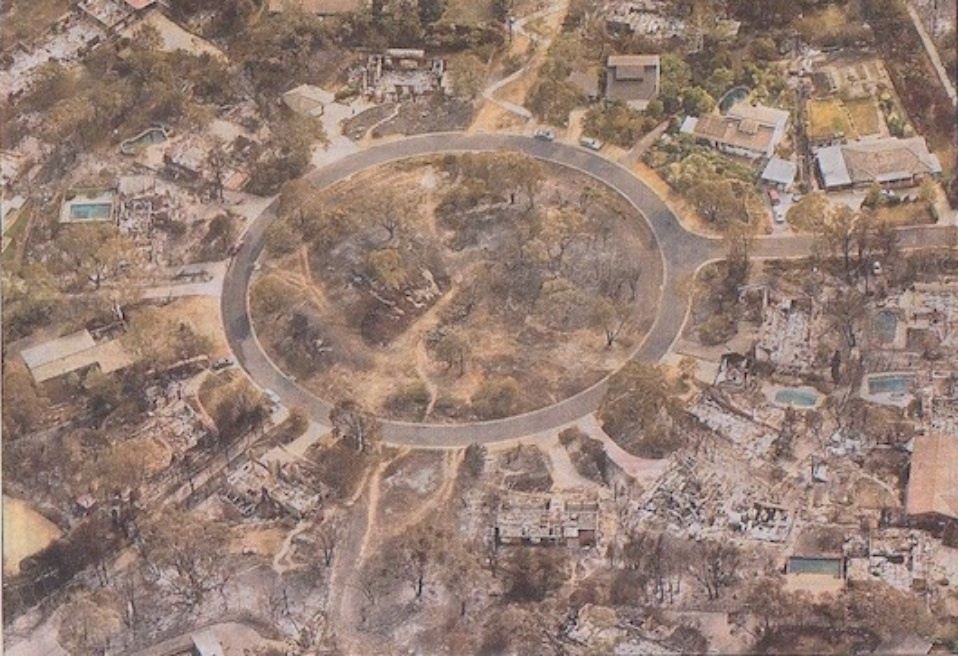Part of a Canberra suburb burnt in 2003.
The community impacts from the 2009 Victorian disaster have been well documented in the media. An estimate of the final cost of this bushfire awaits the final report of the Royal Commission, but is likely to exceed a billion dollars.
And it does not end with the direct impacts of the fire on those affected. We all lose financially because the inevitable consequence of any large disaster is a rise in insurance premiums.
How much better then, if we can avoid, or at least minimise the risk, of such disasters happening again. While the Canberra fire disaster was a complex issue, with several factors contributing to the outcome, experienced fire managers have estimated that a prescribed burn costing about $100,000 would have prevented the disaster, but the burn did not take place due to mistaken land management policies. A mere $100,000 set against well over $257 million would seem a good deal for the community.
Canberra is not the only city to have suffered from bushfire damage in recent years. Sydney has experienced a series of lesser, but still serious, bushfire disasters since 1994. In some respects most Australian city fringes and country towns have become more prone to bushfire damage over the past 30 or so years, with the proliferation of rural lifestyle smallholdings and natural vegetation reserves that are preserved, rather than actively managed. Many people who move into rural smallholdings have little awareness of bushfire issues and the threat posed by unmanaged native vegetation.
The 2003 Canberra disaster and the Sydney fires were dwarfed by a succession of large wildfires in Victoria. There were very severe and extensive bushfires in Victoria in 2004 and 2007. The 2007 fires burned for several weeks and covered an area of about one million hectares. A recent unofficial estimate of the costs, which includes the damage to forests and property, as well as the costs of suppression, is over $900 million. With those sorts of losses, one might expect the State government to review its whole approach to bush fire management.
In fact, an inquiry was carried out mid-2007, and the Bush Fire Front made a submission to it. The report of this inquiry recommended a greatly enhanced program of fuel reduction burning in Victorian forests. Almost nothing had been done to implement this recommendation before the incredible disaster of February 2009. The full story awaits the outcome of the subsequent Royal Commission.
The 2016 fire disaster at Yarloop virtually destroyed the town and two lives were lost. A little earlier, more lives were lost in the Esperance fire. Two years after Yarloop, local people were still suffering trauma distress from the fire. Quite apart from the economic losses to individuals, the dislocation to peoples lives is tremendous.
Public infrastructure also suffers in major wildfires, Bridges may be burnt, powerlines damaged and industrial plants destroyed. All these lead to diversion of Government resources to repair them, or to reduced economic performance by industry. Apart from the inconvenience of interrupted access, lack of electrical power and economic activity, job losses are frequently added to human woes.
As an example of infrastructure losses, after the 2016 Yarloop fire, in which over 160 homes were destroyed, Western Power estimated that the cost of restoring the electricity network at $26 million. Where does the finance for this come from? Probably from our pockets as Western Power recovers its losses through its tariffs.
Firefighters
Firefighting is inherently a dangerous business, especially when confronted with a fire like that shown below. While good training can minimize the risks, under "blow-up" conditions like that in Victoria in February 2009, even experienced firefighters are at very high risk.
We should not forget that most people fighting rural fires are volunteers, who take on these tasks out of a sense of community spirit. Why should we expose them to the huge risks entailed in fighting fires in heavy fuels. Dont we owe it to them to make their job as safe as we can? Fuel reduction burning is the only practical way to do that.
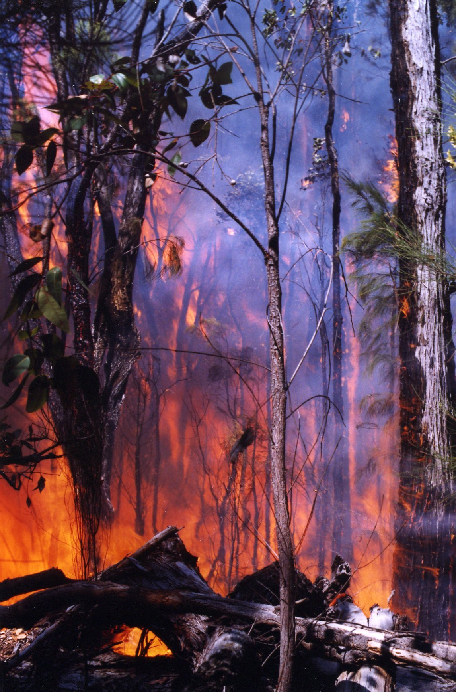Impacts on Forests
Forests
Of course, the forests incinerated by these intense bushfires also suffer great damage. Unlike the usual description employed in the media, most native forests are not “destroyed” by wildfire. Some are. Ash-type eucalypt forests are killed in this way, as the 1939 Victorian fire disaster clearly demonstrated. Drier forest types, such as jarrah in WA are not destroyed, although they are severely damaged and many trees are killed by high intensity bushfires.
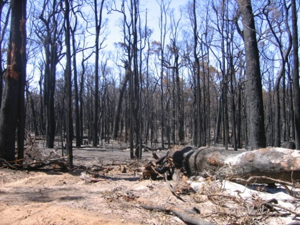Jarrah forest defoliated by a bushfire
Although some individual trees may die, the forest cover is not removed in a wildfire. In a large bushfire, however, the total number of trees killed can be very large. In the 2005 Perth Hills fire, for example, it was estimated that over 1.5 million trees were killed outright. As the image above shows, the forest environment, so important for so many aspects of biodiversity, is completely lost for some time, until the trees are able to reform their crowns.
Most eucalypts have a number of specialised features that enable recovery from intense fires. The remaining trees are, however, damaged in a number of ways. The cambium (the growth layer under the bark) may be killed in one side of the bole, resulting in “dry sides” which are subsequently prone to insect attack, degrading the timber for almost any use. Rots also gain entry via dry sides and burnt limbs. Trees that already have “hollow butts” will often burn out completely and fall, and new hollow butts will be created when a dry log burns alongside a standing tree. The upper parts of saplings and small trees are often killed so that the stems become malformed, thus reducing their potential commercial value, as well as permitting access by damaging fungi and insects.
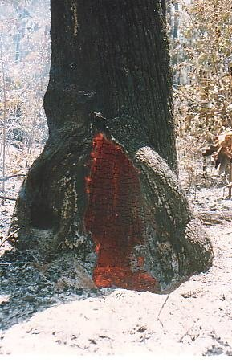This image show bushfires cause hollow butt
In 2003 there was a 25,000 ha wildfire at Mount Cooke, in the northern Jarrah forest, where post-fire evaluations were carried out. The fuel in most of the fire area was about 17 years old, carrying about 18 tonnes/ha of fuel. It was almost completely burnt out by a crown fire, and areas of bushland on Mt Cooke itself, regarded as fire refugia as they had not been burnt during three rotations of previous prescribed burning, were completely burnt-out by the high intensity fire. The photograph below shows the fire steaming up Mt Cooke, obliterating all in its path.
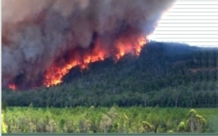A post fire evaluation estimated that the fire had killed about 10 million of the overstorey trees outright. 10 million!! Whereas there had been multiple seral stages across the fire area before 2003, the fire reduced the whole area to one simplified seral stage.
In the case of pine plantations, on which we are now so dependent for timber supplies in WA, the trees are killed by high intensity bushfires. The logs may also be degraded for certain end uses by charcoal. Destruction of immature plantations disrupts the flow of future timber supplies, with adverse impacts on local employment. In blue gum plantations, we can expect that high intensity fires will kill most trees and, due to their small size, the degradation of logs by charcoal will render them useless for pulpwood, their intended market.
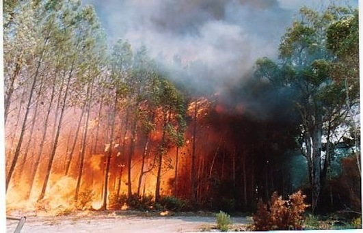A burning pine forest
Wildlife
Intense bushfires cause the death, by incineration or smoke suffocation, of large numbers of native animals and insects that are unable to avoid the flames. Microsites (i.e. small areas of different nature from the general area) that do not burn under low intensity burns are incinerated and there are thus no refugial areas left for fire sensitive flora or fauna, or for subsequent recolonisation after the fire. Any animals that are able to take refuge in holes in the ground or in logs are usually quickly lost after a bushfire as they no longer have any cover from predators.
By contrast a mild fuel reduction burn causes very little damage. The usual objective is to burn only about 70% of an area, so that there is a patchwork of small areas unburnt in which insects and animals take refuge and from which later move out to recolonise the surrounding regenerating area. Unburnt plants in these patches also seed into adjacent areas. The fire also stimulates the germination of many species from seed stored in the soil. Other species of understorey plants regrow rapidly from rootstocks.
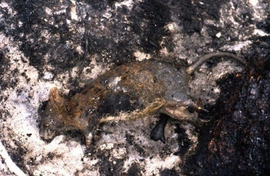Quokka killed by a wildfire
The large areal extent of severe bushfires means that, unlike low intensity fuel reduction burning where any fauna losses are quickly made up from surrounding unburnt forest, there are wholesale fauna losses. The potential for total loss of a rare and endangered species is clear.
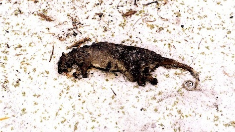A ringtail possum caught in a bushfire.
The larger native fauna generally outrun a wildfire, but sometimes even they are caught.
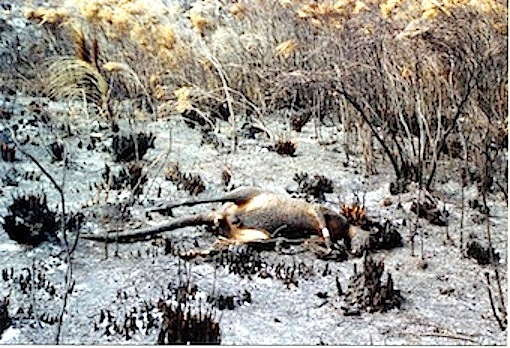It is not only terrestrial fauna that is adversely affected by bushfires. If extensive areas of a catchment are covered by a bushfire, the aquatic fauna is also affected, as shown by the study reported by Batini and Barrett.
Impacts on Water Catchments
High intensity wildfires have very adverse effects on water supply catchments. The immediate impact is a great increase in runoff from the next rainy period, due to the lack of interception by tree and understorey foliage. While this may appear to be a benefit for dam storage, in fact it is not, as it is accompanied by extensive soil erosion and the transport of large quantities of silt and ash into the water storage facility. A bushfire like this:
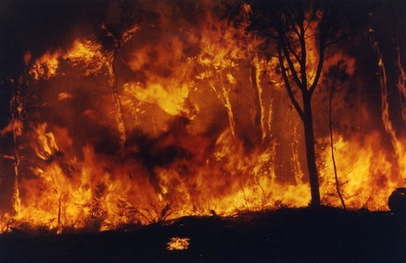produces this:
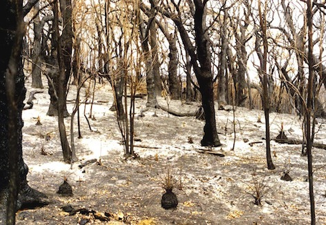Removal of the tree canopy exposes the soil to erosion with loss of soil fertility and wash of silt into dams. The ash is also highly detrimental to water quality and can actually cause a dam to be withdrawn from the supply system. This happened in Canberra after the 2003 fire disaster there. The silt and ash flow can also damage or even destroy valuable stream gauging stations (see the paper presented by Colin Terry at the Eaton Seminar in the Resources section)
In the large Perth Hills bush fire of 2005, monitoring of a Water Corporation experimental catchment showed that water yield increased by a factor of 2.2 times in the first year, but then returned to normal afterward, However, over 350 cubic metres of soil were deposited in the stream bed, silting up the stream and small pools. Large amounts of silt and ash passed through into the Mundaring Weir. A survey by the Department of Environment and Conservation found that aquatic diversity was significantly impaired in the wild fire area. Invertebrates in the wildfire area were also much less diverse than those from areas that had been covered by a low intensity fuel reduction burn.
It was estimated that between 1.5 and 2.3 million trees were killed outright by this high intensity bushfire. The forest has therefore been significantly degraded by this one wild fire. It will take many, many years to replace these trees.
Analysis by the Water Corporation of fuel reduction burn data and water flow over a 40 year period (1960-1999) showed a stream flow increase of between 20-49% for two years after each burn, As most burning is carried out in spring, when the stream zone is moist, there is minimal damage to vegetation and water quality. On the Gnangara Mound, recharge to the water table increased for 5 years after a fuel reduction burn.
In view of the great importance of the forested catchments in the Darling Range and the Gnangara Mound to metropolitan water supplies, it is imperative that high intensity wildfires be excluded from the region. It is so important that this happen that the management priority for the region should be reviewed and catchment protection be given higher priority than the current DEC/PAW/DBCA top priority for biodiversity protection. The entire area covered by the harnessed catchments or groundwater areas needs to be managed on a 5-7 year burning rotation.